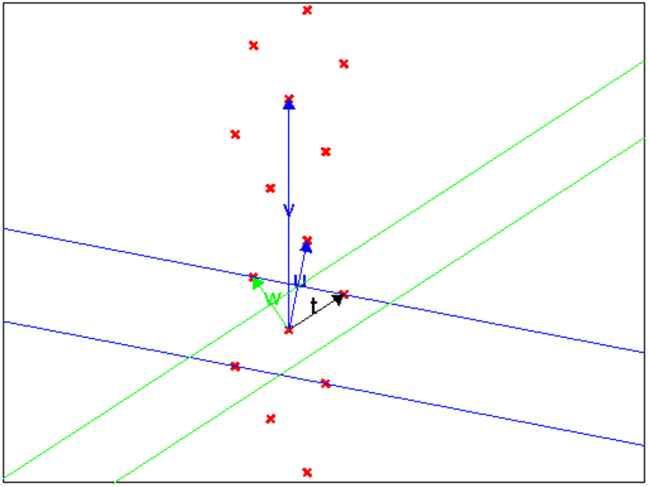

Merci à Bernard Ycart de nous avoir envoyé le fichier de l’article de Raymond Seroul sur les formules à la machin et l’algorithme de Todd, paru en 1986 à l’IREM de Strasbourg.
On rappelle que ℤ[i]={m+in, (m,n)∈ ℤ2}.
ℤ[i] est un anneau intègre euclidien.
Soient a ∈ ℤ[i] et b ∈ ℤ[i]−{0}, alors on dit que le quotient entier
q de a par b est l’affixe du (ou des) point(s) le plus proche pour le
module du point d’affixe a/b et alors le reste de la division euclidienne est
r=a−bq.
On choisit q pour que bq soit le plus proche
possible de a et on peut montrer que l’on peut choisir r=a−bq tel que
|r|2 ≤ |b|2/2.
Le pgcd dans ℤ[i] se calcule comme dans ℕ par l’algorithme d’Euclide.
Si a et b sont des entiers ou des entiers de Gauss :
iquo(a,b) renvoie le quotient q de la division euclidienne de a par
b et
irem(a,b) renvoie le reste r de la division euclidienne de a par
b.
q et r vérifient :
si a et b sont entiers a=bq+r avec 0 ≤ r<b
si a et b sont des entiers de Gauss a=bq+r avec |r|2) ≤ |b|2/2.
iquorem(a,b) renvoie la liste [q,r] du quotient et du reste de la
division euclidienne de a par b .
gcd(a,b) renvoie le pgcd de a et b
Par exemple :
si a=−6+17i et si b=7+i on tape :
iquo(-6+17*i,7+i)
et on obtient : -1+3*i
irem(-6+17*i,7+i)
et on obtient : 4-3*i
iquorem(-6+17*i,7+i)
et on obtient : [-1+3*i,4-3*i]
Donc la
division euclidienne de a par b a pour quotient −1+3i et pour reste
4−3i .
On tape : iquorem(7+i,4-3*i)
et on obtient : [1+i,0]
Donc 7+i est un multiple de 4−3i
gcd(7+i,-6+17*i)
et on obtient : 4-3*i
On tape :
quotient(a,b):={
local q1,q2,c;
c:=normal(a/b);
q1:=re(c);
q2:=im(c);
return round(q1)+i*round(q2);
}
:;
reste(a,b):={
local q;
q:=quotient(a,b);
return a-b*q;
}
:;
pgcdzi(a,b):={
local q,r;
tantque b!=0 faire
q:=quotient(a,b);
r:=a-b*q;
a:=b;
b:=r;
ftantque;
//on normalise
si re(a)<0 et im(a)<=0 alors retourne -a;fsi;
si im(a)<0 alors retourne i*a;fsi;
si re(a)<=0 alors retourne -i*a;fsi;
retourne a;
}:;
On tape :
pgcdzi(3+i,3-i)
On obtient :
1+i
On tape :
pgcdzi(7+i,-6+17*i
On obtient :
3+4*i
Théorème
Si p est un nombre premier de ℕ congru à 1 modulo 4, alors
il existe deux entiers a et b tel que p=a2+b2.
On tape :
pa2b2(89)
On obtient :
[5,8]
On tape :
pa2b2(317)
On obtient :
[11,14]
Idée de la preuve du théorème
Dans ce qui suit, p est un nombre premier de ℕ congru à 1 modulo 4.
L’algorithme sur un exemple
On choisit p=13, et prenons rac =5 (puisque 52=25=−1 mod13).
Dessinons quelques points du reseau en tapant :
reseau(p,rac):={
local L,j,k;
L:=NULL;
pour (j:=-2;j<=2;j++) {
pour (k:=-3;k<=3;k++) {
L:=L,point(k+i*(rac+k*p)+13*j);
}
}
return affichage(L,epaisseur_point_2+1);
}:;

On commence avec u=1,rac et v=0,p. on réduit u,v ce qui veut dire
que l’on échange u et v (car u*u<v*v), puis on remplace v par
w=v−2*u,u afin que w soit dans la bande bleue.
On réduit w,u ce qui veut dire que l’on remplace w,u par u,w (car
u*u>w*w) puis on remplace u par t=u−w afin que t soit dans la bande
verte. On s’arrête et t et w sont de norme minimale (t*t=w*w=22+32=13).
L’algorithme
Traduction de l’algorithme en langage Xcas
puiss(a,k,p):={
local pui;
pui:=1;
while(k>0) {
if (irem(k,2)!=0){
pui:=irem(a*pui,p);
k:=k-1;}
a:=irem(a*a,p);
k:=k/2;
}
return pui;
}:;
sqrtmod(p):={
local j,k,a,r;
if (!isprime(p)) {return p+"n'est pas premier"};
k:=iquo(p-1,4);
r:=irem(p-1,4);
if (r!=0) {return "erreur"};
a:=2;
j:=puiss(a,k,p);
while (j == 1 or j==p-1){
a:=a+1;
j:=puiss(a,k,p);
}
return j;
}:;
reduire(u,v):={
local w,uv,m,v2;
if (u*u<v*v){
w:=u;
u:=v;
v:=w;
}
uv:=u*v;
v2:=v*v;
m:=floor(1/2-uv/v2);
return m,u+m*v,v;
}:;
solpa2b2(p):={
local u,v,m,rac;
rac:=sqrtmod(p);
u:=[1,rac];
v:=[0,p];
m,u,v:=reduire(u,v);
while (m!=0) {
m,u,v:=reduire(u,v);
}
return abs(v);
}:;
On tape :
solpa2b2(1009)
On obtient :
[15,28]
On tape :
pa2b2(1009)
On obtient :
[28,15]
On tape :
solpa2b2(1000033)
On obtient :
[408,913]
On tape :
pa2b2(1000033)
On obtient :
[913,408]
On tape :
solpa2b2(1000000009)
On obtient :
[3747,31400]
On tape :
pa2b2(1000000009)
On obtient :
[31400,3747]
On tape :
solpa2b2(1000000000061)
On obtient :
[848494,529205]
On tape :
pa2b2(1000000000061)
On obtient :
[529205,848494]
Définition
On dit que a ∈ ℤ[i] est inversible si il existe b ∈ ℤ[i]
tel que ab=1.
On dit que b ∈ ℤ[i] est associé à a ∈ ℤ[i] si il existe
c ∈ ℤ[i] inversible tel que a=bc.
Exercice
Déterminer les éléments inversibles de ℤ[i].
Déterminer les associé de x+iy ∈ ℤ[i].
Solution
Si a=a1+ia2 ∈ ℤ[i] est inversible si il existe b=b1+ib2 ∈ ℤ[i]
tel que ab=1.
Donc en égalant les modules :
1=(a12+a22)(b12+b22) comme a12+a22 ∈ ℕ et
b12+b22 ∈ ℕ cela entraine que a12+a22=1 c’est à dire
a∈ {1,i,−1,−i}
Les associés de x+iy sont donc {x+iy,−x−iy,y+ix,y−ix}.
Définition
On dit que a ∈ ℤ[i] est irréductible si a est non inversible ou
si a n’est le produit de 2 nombres appartenant à ℤ[i] que lorsque l’un
de ces nombres est inversible.
Par exemple :
Les éléments inversibles de ℤ[i], {1,−1,i,−i}, ne sont pas
irréductibles dans ℤ[i].
2 n’est pas irréductible dans ℤ[i] car 2=(1+i)*(1−i).
1+2i est irréductible car si 1+2i=(a1+ia2)(b1+ib2) alors en égalant
le carré des modules on a :
5=(a12+a22)(b12+b22). Comme 5 est premier cela entraine que
a12+a22=1 (ou b12+22=1) c’est à dire
a∈ {1,i,−1,−i} (ou b∈ {1,i,−1,−i})
(1+i) est irreductible car si 1+i=(a1+ia2)(b1+ib2) en égalant le
carré des modules on obtient :
2=(a12+a22)(b12+b22) donc
(a12+a22)=1 et (b12+b22)=2 (ou (b12+b22)=1 et
(a12+a22)=2 ) ce qui veut dire que (a1+ia2) est
inversible et (b1+ib2) est l’associé de 1+i (ou
(b1+ib2) est inversible et (a1+ia2) est l’associé de 1+i).
Théorème
Si dans ℤ[i] a irréductible divise bc alors a divise b ou
a divise c.
Théorème
Si un entier de Gauss est irréductible alors l’un de ses associé est :
Ainsi un entier de Gauss z est irréductible de type 1 (z=1+i), de type 2
(z=x+iy où x2+y2 est un nombre premier de ℤ congru à 1
modulo 4) ou de type 3 (z∈ℤ avec z congru à 3 modulo 4).
Démonstration
Soit a+ib un entier de Gauss est irréductible
Exercice
Écrire un programme estirreductible,
qui prend en entrée un entier de Gauss z et retourne son type (1, 2 ou 3)
si z est irréductble, et 0 sinon.
estirreductible(z):={
local p,m,n;
m:=abs(re(z));
n:=abs(im(z));
//if(type(m)!=2 or type(n)!=2){return faux; }:
if (z*conj(z)==1){return 0};
if (m==0) {m:=n;n:=0;}
if (n==0) {if (m>2 and irem(m-3,4)==0){return 3; }};
if (m==1 and n==1) {return 1; };
p:=m^2+n^2;
if (est_premier(p) and irem(p-1,4)==0){return 2; } else {return 0;}
}
:;
Exercice
Écrire un programme qui décompose un entier de Gauss en un produit de
facteurs irréductbles.
decompose(z):={
local p,L1,L2,L3,s2,s0,s1,s3,k,c,lc,fc,j,z1,d;
L1:=NULL;
L3:=NULL;
//if (im(z)==0) {p:=abs(z);} else {p:=z*conj(z);}
p:=z*conj(z);
L2:=ifactors(p);
s2:=size(L2);
c:=L2[0];
s0:=0;
if (c==2) {L1:=L1,1+i,,L2[1];s0:=2;z:=z/(1+i);}
for (k:=s0;k<s2;k:=k+2) {
c:=L2[k];d:=L2[k+1];
if (irem(c-1,4)==0) {
lc:=pa2b2(c);
fc:=lc[1]+i*lc[0];
j:=0;z1:=z;
while(irem(z1,fc)==0)
{j:=j+1;
z1:=z1/fc;
}
if (j!=0 and j!=d) {
L1:=L1,fc,j,conj(fc),d-j;
z:=z/fc^j;z:=z/conj(fc)^(d-j);}
else {
if (j==0) {L1:=L1,conj(fc),d;z:=z/conj(fc)^(d-j)}
else {L1:=L1,fc,j;z:=z/fc^j;}}
}
if (irem(c-3,4)==0) {L3:=L3,c,d/2;z:=z/c^(d/2);}
}
if (z==1){
return [L1,L3];}
else
{return [z,1,L1,L3];}
}
:;
Ou bien, on utilise la commande ifactors ou la commande ifactor.
Définition
On dit que n ∈ ℤ − {−1,0,1} est décomposable, si pour tout
diviseur premier p de 1+n2 il existe d∈ ℕ vérifiant d<abs(n)
et tel que 1+d2 soit un multiple de p.
Par exemple
8 est décomposable car 1+82=65=5*13 et on a
5 divise 1+22=5 (d=2) et 13 divise 1+52=26 (d=5).
17 est décomposable car 1+172=290=2*5*29 et on a
2 divise 1+12=2 (d=1) et 5 divise 1+22=5 (d=2) et
29 divise 1+122=145=29*5 (d=12).
6 est non décomposable car 1+62=37=1*37 et on a
1 divise 1+22=5 (d=2) mais 37 ne divise pas 1+d2 quelque soit
0≤ d≤ 5 (car 37> (1+d2) lorsque 0≤ d≤ 5).
19 est non décomposable car 1+192=362=2*181 et on a
2 divise 1+32=10 (d=2) mais 181 ne divise pas 1+d2 quelque soit
0≤ d≤ 18 (car 180 n’est pas un carré).
Exercice
Écrire une fonction Xcas estdecomposable,
qui prend en entrée un entier n, et retourne le booléen vrai
si n est d’ecomposable, faux sinon.
Et vérifier que les premiers entiers décomposables sont :
3,7,8,12,13,17,18,21,23,27,30
Les différentes solutions avec des algorithmes de plus en plus performents.
estdeconposable0(n):={
local p,Lf,k,p1,d,t,s;
n:=abs(n);
p:=1+n^2;
if (isprime(p)) {return faux};
Lf:=ifactors(p);
s:=size(Lf);
for (k:=0;k<s;k:=k+2){
p1:=Lf[k];
d:=1;
t:=0;
while(t!=1 and d<n) {
if (irem(1+d^2,p1)==0) {t:=1;afficher(d,p1);};
d:=d+1;
}
if (t==0){return faux;}
}
return vrai;
}:;
estdecomposable1(n):={
local p,N,Lf,k,d,d1,a,b,L,a1,b1,s;
n:=abs(n);
N:=1+n^2;
if (isprime(N)) {return faux};
Lf:=ifactors(N);
s:=size(Lf);
for (k:=0;k<s;k:=k+2){
p:=Lf[k];
if (p!=2){
//on irem(p,4)==1 et p premier
a,b:=pa2b2(p);
if (a!=1 and b!=1) {
L:=iegcd(a,b);
a1:=L[0];
b1:=-L[1];
d:=irem(b*a1+a*b1,p);
d1:=irem(-b*a1-a*b1,p);
//afficher(d,d1,p);
};
if (d>=n et d1>=n) {return faux;}
}
}
return vrai;
}:;
estdecomposable2(n):={
local p,N,Lf,k,d,a,b,d1,s;
n:=abs(n);
N:=1+n^2;
if (isprime(N)) {return faux};
Lf:=ifactors(N);
s:=size(Lf);
for (k:=0;k<s;k:=k+2){
p:=Lf[k];
if (p!=2){
d:=irem(n,p);
d1:=irem(-n,p);
afficher(d,d1,p);}
if (d1>=n et d >=n){return faux;}
}
}
return vrai;
}:;
estdecomposable(n):={
local p,N,Lf,k,d,d1,s,s1;
n:=abs(n);
N:=1+n^2;
if (isprime(N)) {return faux};
Lf:=ifactors(N);
s:=size(Lf);
p:=Lf[0];
if (p==2){s1:=2} else {s1:=0};
for (k:=s1;k<s;k:=k+2){
p:=Lf[k];
//on a irem(p,4)==1 et p premier
if (abs(n)<p/2) {return faux;}
}
return vrai;
}:;
On tape pour avoir la liste des nombres décomposables plus petit que n :
Lestdecomposable(n):={
local L,k;
L:=NULL;
for (k:=1;k<=n;k++){
if (estdecomposable(k)) {
L:=L,k;
}
}
return L;
}:;
Lestdecomposable(35)
On obtient :
3,7,8,13,17,18,21,30,31,32
Definition :
On dit que le nombre z=a+ib est complétable si il existe u+iv ∈ ℤ[i]
et m∈ ℤ tel que : (a+ib)(u+iv)=1+im .
Théorème2 :
Si a et b sont premiers entre eux alors z=a+ib est complétable.
De plus, si a≠ 1 et b≠ 1, il existe u,v,m ∈ ℤ3 uniques tel
que (a+ib)(u+iv)=1+im et |m|<(a2+b2)/2 et u2+v2<0.29(a2+b2).
De plus u et v sont premiers entre eux et donc u+iv et u−iv sont
complétables.
Démonstration
C’est le théorème1 sans l’hypothèse p=a2+b2 premier.
Tout d’abord 1+in et n+i sont complétables car (1+in)*1=1+in et
(n+i)*(−i)=1−in et on a n<(1+n2)/2 si et seulement si n≠ 1.
Soient a≠ 1 et b≠ 1 premiers entre eux et z=a+ib.
On suppose donc que a2+b2≥ 5.
On a vu (cf th 1) que les m vérifiant (a+ib)(u+iv)=1+im sont congru
modulo a2+b2.
On va considérer 2 cas :
Puisque a2+b2≥ 5 on a (a2+b2)2≥ 25 ou encore :
1/(a2+b2)≤ (a2+b2)/25 donc :
(a2+b2)(u2+v2)=1+m2<1+(a2+b2)2/4 donc
(u2+v2)< 1/(a2+b2)+(a2+b2)/4≤ (1/25+1/4)(a2+b2)=0.29(a2+b2).
Le programme complete ci-dessous a comme argument z=a+in et
renvoie u+iv,1+im avec
(a+ib)(u+iv)=1+im et −(a2+b2)/2<m<(a2+b2)/2
complete(z):={
local p,m,a,b,u,v,L;
a:=re(z);
b:=im(z);
p:=a^2+b^2;
if (gcd(a,b)!=1){ return faux;}
if (a==1) {return 1,1+i*b};
if (b==1) {return -i,1-i*a};
L:=iegcd(a,b);
u:=L[0];
v:=-L[1];
m:=irem(b*u+a*v,p);
if (m>p/2){m:=m-p;}
return u+i*v,1+i*m;
}:;
Si on veut une liste des nombres qui complétent le nombre complétable a+ib, on tape :
Lcomplete(z):={
local L,z1,a1,b1,d1,k,b,a ;
L:=complete(z);
z1:=L[0];
a1:=re(z1);
b1:=im(z1);
a:=re(z);
b:=im(z);
d1:=L[1];
return ([a1+k*b+i*b1+i*k*a,d1+i*k*abs(z)^2])$(k=-5..5);
}:;
Soit n≥ 2 un entier décomposable (i.e. pour tout diviseur premier p de
1+n2 et il existe d, 0<d<n, tel que p soit aussi un diviseur
premier de 1+d2).
Il existe un entier M>1 et des entiers wj (|wj|<n) tels que :
M(1+in)=є(1+iw1)a1(1+iw2)a2...(1+iwk)ak (є ∈ {1,−1,i,−i}).
Cette formule donne en égalant les arguments :
atan(n)=arg(є)+∑j=1kajatan(wj)+mπ.
et puisque pour x>0 on a :
atan(x)+atan(1/x)=π/2
on a aussi :
atan(1/n)=−arg(є)+∑j=1katan(1/wj)+q*π.
Soit n≥ 2 un entier décomposable. L’algorithme de Todd factorise
1+in et compléte par u+iv chaque facteur irréductible a+ib si
a≠ 1 ou b≠ 1 pour avoir (a+ib)(u+iv)=1+im
Par exemple si (1+in)=(a+ib)*z1, on obtient :
(1+in)(u+iv)(u−iv)=(a+ib)(u+iv)(u−iv)z1 donc
(1+in)(u2+v2)=(1+im)(u−iv)z1
Si u==1 ou v==1 on s’occupe d’un autre facteur irréductible, sinon
on compléte (u+iv)....
Comme (u2+v2)<0.29(a2+b2) u2+v2 diminue à chaque complétion, donc
l’algorithme s’arrête.
On va montrer sur un exemple comment fonctionne l’algorithme de Todd.
Soit n=342 n est décomposable.
On tape :
ifactors(1+i*342)
On obtient :
[-1,1,2-i,1,10-7*i,1,11-6*i,1]
On a : −(2−i)=−2+i=i(1+2i)
Donc 1+342i=i(1+2i)(10−7i)(11−6i)
On tape :
complete(10-7*i)
On obtient :
-2+3*i,1+44*i
donc (10−7i)*(−2+3i)=1+44i
On tape :
complete(-2-3*i)
On obtient :
1+i,1-5*i
donc
(10−7i)(−2+3i)(−2−3i)(1+i)(1−i)=26(10−7i)=(1+44i)(1−5i)(1−i)
On tape :
complete(11-6*i)
On obtient :
-1+2*i,1+28*i
donc (11−6*i)(−1+2i)=1+28i
donc (11−6*i)(−1+2i)(−1−2i)=5(11−6*i)=(1+28i)(−1−2i)
Donc puisque −(2−i)=i(1+2i) on a :
5*26(1+342i)=i(1+2i)(1+44i)(1−5i)(1−i)(1+28i)(−1−2i)
130(1+342i)=−i(1−i)(1+2i)2(1−5i)(1+28i)(1+44i)
| atan(x)+atan( |
| )= |
| si x>0 |
| atan(x)+atan( |
| )=− |
| si xx0 |
On peut écrire un petit programme ajuste pour simplifier :
∑j=1kajatan(wj).
ajuste a comme argument la liste formée par les arguments wj des
arcs tangentes en répétant aj fois wj et renvoie C,a
tel que :
∑j=1kajatan(1/wj)=C+atan(a).
Par exemple pour la formule :
atan(−1)+2atan(2)−atan(5)+atan(28)+atan(44).
on met comme argument la liste L:=[-1,2,2,-5,28,44] et ajuste(L)
renvoie pi,-1/342.
On définit f la fonction f par :
f(a,b):=(a+b)/(1-a*b);
Pour simplifier atan(a)+atan(b), on écrit tout d’abord la fonction
simpl(a,b) qui renvoie C,c tel que :
atan(a)+atan(b)=C+atan(c)
Puis, on écrit ajuste(L) qui renvoie C,c tel que :
∑jatan(L[j])=C+atan(c)
f(a,b):=(a+b)/(1-a*b);
simpl(a,b):={
local s;
if (a==0) {return 0,b;}
if (b==0) {return 0,a;}
s:=sign(a);
if (a*b==1) {return s*pi/2,0;}
if (a*b<1) {return 0,f(a,b);}
if (a*b>1) {return s*pi,f(a,b);}
}:;
ajuste(L):={
local s,a,b,C,c,ajou,k;
ajou:=0;
s:=size(L);
a:=L[0];
k:=1;
while (k<s){
b:=L[k];
C,c:=simpl(a,b);
ajou:=ajou+C;
a:=c;
k:=k+1;
}
return normal(ajou),a;
}:;
On tape : ajuste([-1,2,2,-5,28,44])
On obtient : pi,-1/342
Donc :
atan(342)+π/2=atan(−1/342)+π=atan(−1)+2*atan(1/2)−atan(1/5)+atan(1/28)+atan(1/44)
Donc :
atan(342)=−π/2+atan(−1)+2*atan(2)−atan(5)+atan(28)+atan(44)
On tape : ajuste([-1,1/2,1/2,-1/5,1/28,1/44])
On obtient : 0,1/342
Donc :
atan(1/342)=atan(−1)+2*atan(1/2)−atan(1/5)+atan(1/28)+atan(1/44)
Remarque
En utilisant Lcomplete(11-6*i) on voit que:
(11−6i)(5−9i)=1−129i
On peut aussi utiliser cette complétion car 123<342/2 et
52+92=106<342/3.
On tape :
complete(5+9i)
On obtient :
2+i,1+23*i
Donc (5+9i)(2+i)=1+23i
Donc on a :
(11−6i)(5−9i)(5+9i)(2+i)(2−i)=5*106(11−6i)=(1−129i)(1+23i)(2−i)
On obtient alors :
1+342i=i(1+2i)(10−7i)(11−6i)
5*106*26(1+342i)=i(1+2i)(1+44i)(1−5i)(1−i)(1−129i)(1+23i)(2−i)
13780(1+342i)=(1−i)(1+2i)2(1−5i)(1+23i)(1+44i)(1−129i)
Donc :
atan(342)=−π/4+2atan(2)−atan(5)+atan(23)+atan(44)−atan(129)
Donc puisque pour x>0 on a atan(x)+atan(1/x)=π/2 on a :
atan(1/342)=−π/4+2atan(1/2)−atan(1/5)+atan(1/23)+atan(1/44)−atan(1/129)
On tape : ajust([-1,2,2,-5,23,44,-129])
On obtient : 0,1/342
On tape : ajust([-1,1/2,1/2,-1/5,1/23,1/44,-1/129])
On obtient : 0,-342
Traduction de l’algorithme de Todd en langage Xcas
todd(n):={
local L,k,s,s1,z,R,Z,Zc,zc,p;
//if (estcompletable(n)==faux) {return faux;};
L:=ifactors(1+i*n);
s:=size(L);
R:=NULL;
p:=1;
for (k:=2;k<s;k:=k+2){
z:=L[k];
if (im(z)^2==1 or re(z)^2==1) {
R:=R,z,L[k+1];}
else {
Z:=complete(z);
R:=R,Z[1],L[k+1];
zc:=conj(Z[0]);
p:=p*abs(zc)^(2*L[k+1]);
while (re(zc)^2!=1 and im(zc)^2!=1){
Zc:=complete(zc);
R:=R,Zc[1],L[k+1];
zc:=conj(Zc[0]);
p:=p*abs(zc)^(2*L[k+1]);
}
R:=R,zc,L[k+1];
}
}
return normal(p),[L[0],1,R];
}:;
On tape :
todd(342)
On obtient :
130,[-1,12-i,1,1+44*i,1,1-5*i,1,1-i,1,1+28*i,1,-1-2*i,1]
On tape :
todd(266)
On obtient :
1850,[i,1,1-80*i,1,1+6*i,1,1-143*i,1,-1+7*i,1]
Une formule de type Machin est une formule qui ressemble à :
| atan(1/n)=k*π+ |
| ajatan(1/wj) |
avec 0<wj<n
Si le but est d’obtenir une formule avec des arcs tangentes, on modifie
l’algorithme précédent pour avoir seulement comme résultat la liste des
wj compté avec leur multiplicité.
On tape :
todd2(n):={
local L,k,s,s1,z,R,Z,Zc,zc,p,RR;
//if (estcompletable(n)==faux) {return faux;};
L:=ifactors(1+i*n);
s:=size(L);
R:=NULL;
p:=1;
for (k:=2;k<s;k:=k+2){
z:=L[k];
if (im(z)^2==1 or re(z)^2==1) {R:=R,z,L[k+1];}
else {Z:=complete(z);
R:=R,Z[1],L[k+1];
zc:=conj(Z[0]);
p:=p*abs(zc)^(2*L[k+1]);
while (re(zc)^2!=1 and im(zc)^2!=1){
Zc:=complete(zc);
R:=R,Zc[1],L[k+1];
zc:=conj(Zc[0]);
p:=p*abs(zc)^(2*L[k+1]);
}
R:=R,zc,L[k+1];
}
}
RR:=NULL;
s:=size(R);
for (k:=0;k<s;k:=k+2){
if (re(R[k])^2!=1){R[k]:=i*R[k];}
RR:=RR,(re(R[k])*im(R[k]))$(R[k+1]);
}
return sort(RR);
}
:;
On tape :
todd2(342)
On obtient :
-5,-1,2,2,28,44
On tape :
ajust(todd2(342))
On obtient :
0,1/266
Donc :
atan(1/342)=atan(−1/5)+atan(−1)+2atan(1/28)+atan(1/44)
On tape :
todd2(266)
On obtient :
-143,-80,-7,6
On tape :
ajust(todd2(266))
On obtient :
0,1/266
Donc :
atan(1/266)=atan(−1/143)+atan(−1/80)+atan(−1/7)+atan(1/6)